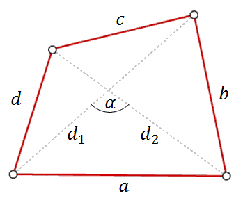

Narysujmy dowolny czworokąt i wprowadźmy na nim
następujące oznaczenia: 
Wzór na obwód i pole: \[Ob = a+b+c+d\\[6pt] P=\frac{1}{2}d_1\cdot d_2\cdot \sin
\alpha \] gdzie:
\(a\), \(b\), \(c\), \(d\) - to boki czworokąta,
\(d_1\), \(d_2\) - to przekątne czworokąta,
\(\alpha \) - to kąt między przekątnymi
czworokąta.